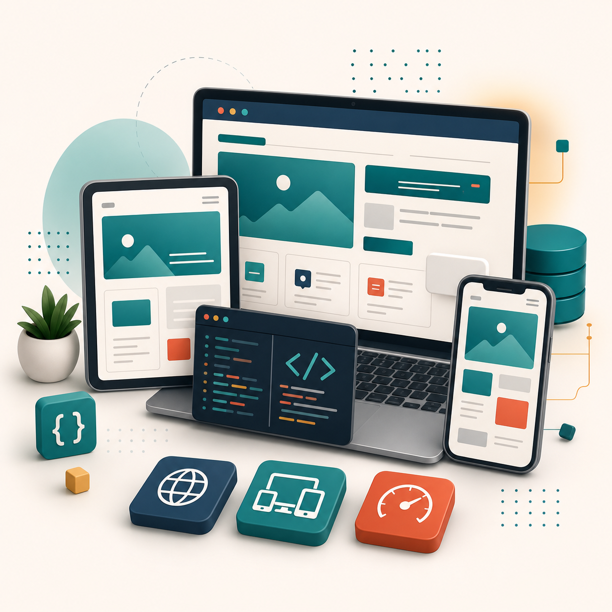
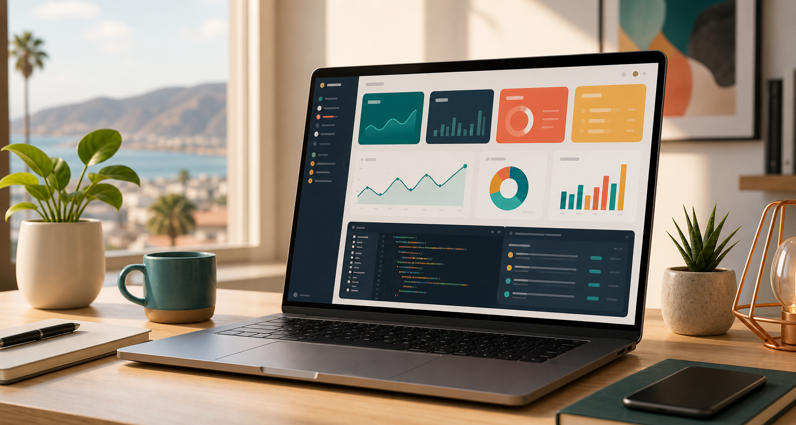

Desarrollo Web Full-Stack & PWAs
Aplicaciones web rápidas, responsivas y optimizadas que funcionan en escritorio, tablet y móvil. Ideales para clientes, equipos internos y operaciones que necesitan claridad.
Web full-stack · Datos · Ensenada
Desarrollo aplicaciones web a la medida, SaaS, PWAs y soluciones analíticas para optimizar tu negocio en Ensenada y todo México.

Servicios principales
Combino desarrollo de software y análisis de datos para convertir procesos manuales, ideas sueltas y métricas dispersas en herramientas útiles para tu negocio.

Aplicaciones web rápidas, responsivas y optimizadas que funcionan en escritorio, tablet y móvil. Ideales para clientes, equipos internos y operaciones que necesitan claridad.
Sistemas de inventario, menús digitales, automatizaciones y herramientas internas diseñadas alrededor de la forma real en que trabaja tu negocio.
Tableros, métricas e insights accionables para dejar de adivinar y empezar a tomar decisiones con información clara, ordenada y fácil de revisar.
Forma de trabajo
La meta es entender primero la operación, priorizar lo que más impacto tiene y entregar una herramienta clara que puedas usar, medir y mejorar.
Sobre mí
Soy Juan Carlos Obeso, founder y desarrollador independiente. Trabajo hombro con hombro con clientes que necesitan convertir una idea, proceso o cuello de botella en una solución digital clara.
Mi diferencia está en entender el negocio desde adentro: operaciones, servicio, tiempos, datos y decisiones. Eso me permite traducir necesidades reales en código eficiente y analítica que sí se usa.
Herramientas elegidas por velocidad, escalabilidad y claridad para proyectos pequeños y medianos.
Lo que buscas conseguir
Herramientas diseñadas para ordenar tareas, datos y procesos sin agregar complejidad innecesaria.
Interfaces que se ven y se sienten bien en cualquier dispositivo, con flujos simples para el usuario.
Métricas presentadas con contexto para tomar decisiones comerciales con menos ruido y más precisión.
Ensenada, Baja California · Todo México
Cuéntame qué quieres construir, automatizar o medir. Te ayudo a aterrizarlo en una primera versión concreta.